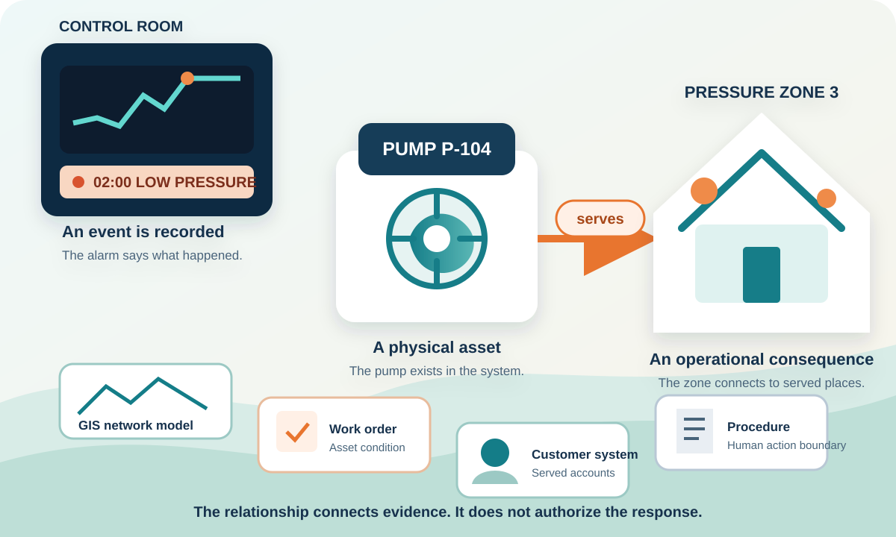
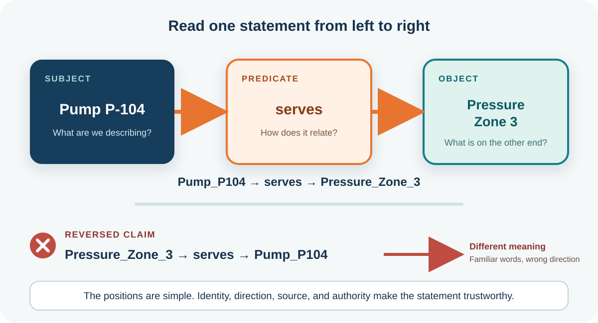
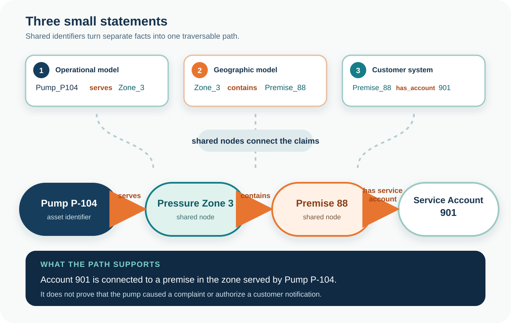

Inspect the lesson relationships
See the concepts, sources, competency, and evidence boundary behind this module.
See how one named relationship becomes a machine-readable path across utility systems.
Misconception we will change: More records automatically give a machine more understanding.
A pump alarm appears at 2:00 a.m. The screen says Pump P-104. The operator can see a pressure reading, a work order, a map, and customer records, but none of those records states the complete answer the operator needs.
The useful question is not, "How much data do we have?" It is, "What does this pump serve, and what is connected to that service area?" Water, wastewater, and stormwater teams ask that same relationship question in different forms.

Choose the strongest answer, then check it. The feedback explains the boundary.
Resource Description Framework, shortened to RDF, represents information as small statements called triples. The subject is the thing you are describing. The predicate names the relationship. The object is the thing or value on the other end.
"Pump P-104 serves Pressure Zone 3" becomes Pump_P104, serves, Pressure_Zone_3. The structure is simple. The hard work is agreeing on identity, relationship meaning, source, and authority.

Choose the subject, predicate, and object. Check the triple, reverse it, then explain why the reversed claim fails.
Say the answer before selecting each card. Select all four cards to complete this retrieval check.
Add two more statements. Pressure Zone 3 contains Premise 88. Premise 88 is linked to Service Account 901. The shared things connect the statements into a path.
A machine can follow that path because every edge is named and directed. The circles and lines are a visual explanation. The graph itself is the underlying set of statements and identifiers.

Select the three edges in order. Read what each edge adds before moving to the next.
Choose the strongest answer, then check it. The feedback explains the boundary.
Do not begin by modeling the whole enterprise. Start with one relationship that answers a recurring question. Name the subject, predicate, object, source, and the question the relationship supports.
Use a real water, wastewater, or stormwater example. Another team should be able to find the source, challenge the claim, and understand exactly what the relationship means.
Draft one useful utility relationship and identify the source and operational question.
No. RDF is a standard model for expressing information as triples. The triples may be stored in a graph database, generated from tables, exchanged as files, or exposed through an application interface.
No. The picture is one view. The graph is the underlying set of identified things and directed, named relationships.
For one small local task, a spreadsheet may be enough. RDF becomes useful when the same pump, zone, premise, procedure, customer, and permit must connect across systems through reusable meanings.
Yes. An object may be another identified resource or a literal value such as a number, date, or text string.
No. It makes the claim explicit. Trust still depends on source, mapping, effective time, authority, review, and validation.
Pump P-104, Pressure Zone 3, Premise 88, and Service Account 901 are instructional examples. RDF definitions are grounded in World Wide Web Consortium standards. The scenario does not establish an operational fact or authorize an action.
See the concepts, sources, competency, and evidence boundary behind this module.
Discuss which relationship your utility repeatedly rebuilds by hand. Community discussion is not governed evidence.
Complete both interactions, both concept checks, the opening decision, and the Relationship Card.